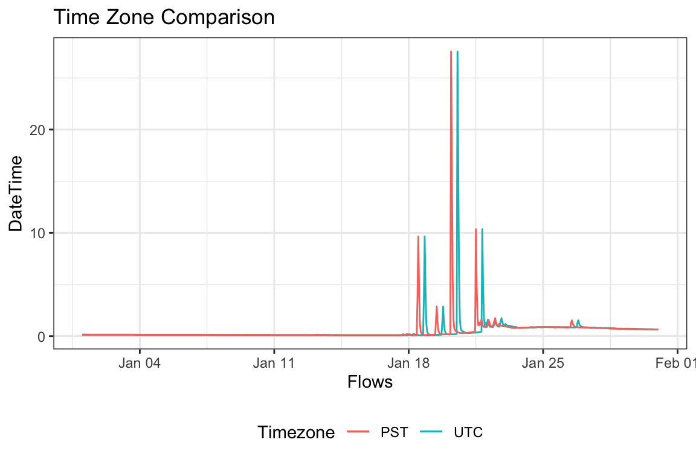
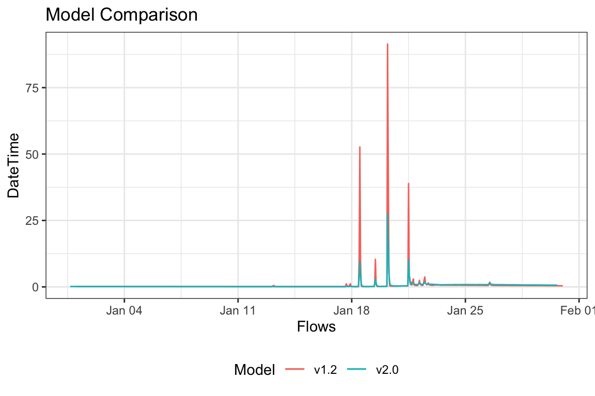

As part of a collaborative research effort, the multi-decadal hitoric simulation products from the NOAA National Water Model (versions 1.2 and 2.0) have been reformatted and exposed through CUAHSI at the RENCI computing facility. This document outlines how someone can interact with the interface.
Reanalysis data can be found with the readNWMdata function. The API requires users to specify NHD Common Identifier(s) (COMID), or NWIS site ID(s) for time series extraction.
NWM reanalysis data can be extracted by NHD Catchment Identifier(s). The following code pulls the complete reanalysis data archive for COMID 17595383, a NHD reach near Goleta, California.
library(nwmTools)
flows = readNWMdata(comid = 17595383)
head(flows)
#> # A tibble: 6 x 4
#> model comid dateTime flow_cms
#> <chr> <dbl> <dttm> <dbl>
#> 1 NWM2 17595383 1993-01-01 00:00:00 0.210
#> 2 NWM2 17595383 1993-01-01 01:00:00 0.210
#> 3 NWM2 17595383 1993-01-01 02:00:00 0.210
#> 4 NWM2 17595383 1993-01-01 03:00:00 0.210
#> 5 NWM2 17595383 1993-01-01 04:00:00 0.210
#> 6 NWM2 17595383 1993-01-01 05:00:00 0.210
dim(flows)
#> [1] 227881 4Alternatively, data can be extracted using USGS NWIS site ID(s).
flows = readNWMdata(siteID = 11120000)
head(flows)
#> # A tibble: 6 x 5
#> model comid dateTime flow_cms siteID
#> <chr> <chr> <dttm> <dbl> <dbl>
#> 1 NWM2 17595429 1993-01-01 00:00:00 0.410 11120000
#> 2 NWM2 17595429 1993-01-01 01:00:00 0.410 11120000
#> 3 NWM2 17595429 1993-01-01 02:00:00 0.410 11120000
#> 4 NWM2 17595429 1993-01-01 03:00:00 0.410 11120000
#> 5 NWM2 17595429 1993-01-01 04:00:00 0.420 11120000
#> 6 NWM2 17595429 1993-01-01 05:00:00 0.420 11120000
dim(flows)
#> [1] 227881 5The default behavior is to extract the complete, hourly timeseries in UTC, for the most current model version. Parameters allow data to be modified by data range, timezone and model version as follows:
By default, the API extracts the complete flow record for each ID. This range can constrained by providing a startDate and/or endDate in the form of (“YYYY-MM-DD”).
utc <- readNWMdata(comid = 17595383,
startDate = "2010-01-01",
endDate = "2010-01-31")
# Check time dimensions
range(utc$dateTime)
#> [1] "2010-01-01 UTC" "2010-01-31 UTC"NWM output is recorded in UTC. Instead, users can specify a timezone. For our COMID in Goleta, California we can request data in US/Pacific time. Valid times zone can be found with OlsonNames().
pst = readNWMdata(comid = 17595383,
startDate = "2010-01-01",
endDate = "2010-01-31",
tz = "US/Pacific")
# Check time dimensions
range(pst$dateTime)
#> [1] "2010-01-01 PST" "2010-01-31 PST"Finally, we can plot the UTC return against the PST return:

The reanalysis product for versions 1.2 and 2.0 of the NWM are available. By default the API extracts data from version 2.0, but data from 1.2 can be requested as well.
pst_v12 = readNWMdata(comid = 17595383,
startDate = "2010-01-01",
endDate = "2010-01-31",
tz = "US/Pacific",
version = 1.2)
In section 2, we will look at how we can facilitate COMID and USGS NWIS discovery. In section 3 we will look at some techniques to handle time aggregations and splitting.